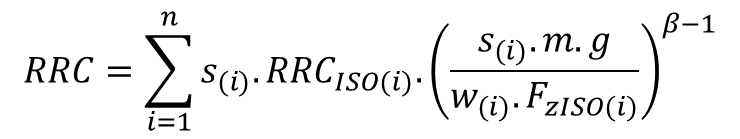

The rolling resistance is calculated using a speed-independent rolling resistance coefficient (RRC).
In order to consider that the RRC is dependent from the vehicle weight
it is modelled as a function of the total vehicle mass. The total RRC
is calculated in VECTO using the following formula. The index
i refers to each single vehicle axle (truck and trailer).

| RRC | [-] | ...Total rolling resistance coefficient used for calculation | [calculated] |
| s(i) | [-] | ...Relative axle load. Defined in the Vehicle File.
| [user input] |
| RRCISO(i) | [-] | ...Tyre RRC according to ISO 28580. Defined in the Vehicle File. | [user input] |
| m | [kg] | ...Vehicle mass plus loading. | [calculated] |
| g | [m/s²] | ...Earth gravity acceleration (constant = 9.81) | [constant model parameter] |
| w(i) | [-] | ...Number of tyres (4 if Twin Tyres, else 2). Defined in the Vehicle File. | [user input] |
| FzISO(i) | [N] | ...Tyre test load according to ISO 28580 (85% of max. load capacity). Defined in the Vehicle File. | [user input] |
| β | [-] | ...Constant parameter = 0.9 | [constant model parameter] |
For each axle the parameters
Relative axle load,
RRCISO and
FzISO have to be defined. Axles with twin tyres have to be marked using the respective checkbox in the
Vehicle Editor.